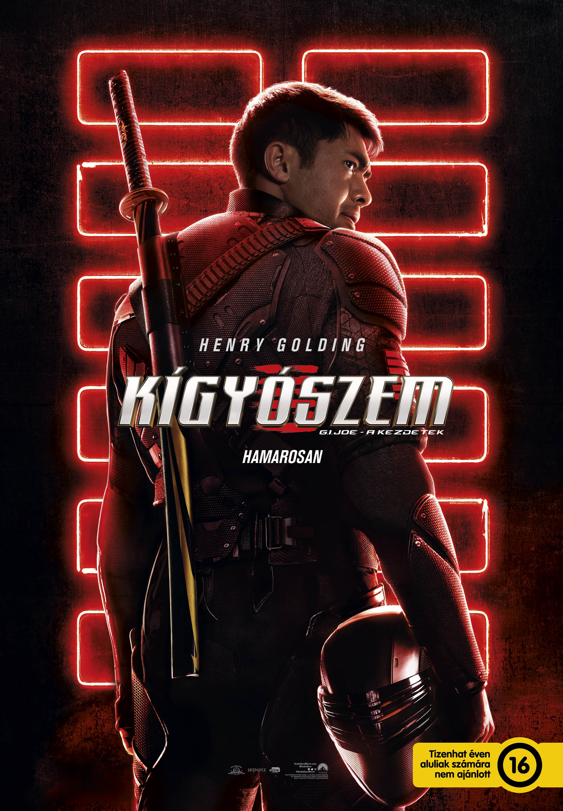

Kígyószem: A kezdetek
Bevezető
Robert Schwentke
A film rendezője
A Kígyószem: G.I. Joe – A kezdetek (eredeti cím: Snake Eyes) 2021-ben bemutatott amerikai akció-kalandfilm, melyet Robert Schwentke rendezett, Evan Spiliotopoulos, Joe Shrapnel és Anna Waterhouse forgatókönyvéből. A film a Hasbro G.I. Joe játék-, képregény- és médiafranchise alapján készült reboot, a G.I. Joe-filmsorozat harmadik része, a címszereplő Kígyószem eredettörténete. A főszerepben Henry Golding, Andrew Koji, Úrsula Corberó, Samara Weaving és Iko Uwais látható. A film az Amerikai Egyesült Államokban 2021. július 23-án kerül a mozikba a Paramount Pictures forgalmazásában, Magyarországon egy nappal hamarabb szinkronizálva, július 22-én a UIP-Dunafilm jóvoltából.
Cselekmény
Egy titokzatos magányos harcost, akit Kígyószem néven ismernek, befogad és kiképez egy ősi japán nindzsa-klán, az Arashikage, de hűségét próbára teszik, amikor titkok derülnek ki a múltjából, és végül elindul azon az úton, hogy később híressé váljon mint G.I. Joe.
Előzmény (20 évvel ezelött)
A történet 20 évvel ezelőtt kezdődik. Kígyószem és az apja hazafelé tartanak, mikor az apja észre vesz valamit. Este meg támadják őket fegyveres emberek. Kígyószem egy szobában tartózkodik, mert az apja arra kérte ne jöjjön ki. Egy férfi jön be a házba aki két kockát add az apának és arra kéri dobjon. Ha jól dob, életben marad. Viszont rosszul dob és Kígyószem meg próbálja menteni apját de nem sikerült. Meg ölik az apját.
Napjainkban
20 évvel később egy illegális verekedésen vesz részt kígyószem, ahol találkozik egy férfival aki arra kéri, hogy csatlakozzon hozzá, cserébe ki deríti hol van az aki meg ölte az apját. Kiderűl, hogy a jakuzza(Japán maffia) dolgozik. Halban rejtett fegyvereket hoznak. Kiderűl, hogy a férfinak akinek dolgozik kígyószem. Van egy unokatestvére akit meg akar ölni kígyószemmel. De nem ő nem tudja meg tenni és segít Tommynak akit meg kellett volna ölnie. Miután túl élték kígyószem meg sérült és egy repülőgépen ébred fel. Tommy el mondja, hogy Kenta az unokatestvérét meg kell állítani.
 Tokióba mennek Tommy családjához, aki egy ősi nindzsacsaládhoz tartozik. Kígyószem kiképzésen vesz részt és 3 próbát kell teljesítenie. Maga a 3. próba az igazi próba, mert az első kettő igazából csak felkészítés az igazira. Közben kígyószem elmegy és kiderűl, hogy Kentaval találkozik. Tervük sikeres volt, mivel bejutott a családba és azt a feladatot kapja, hogy egy hatalommal bíró követ hozzon el, ami a család erejét jelképezi. A család tagja egy lány, aki képzett harcos. Eleinte nem bízott benne, olyannyira, hogy esik este követte Kígyószemet, de elvesztette. A harmadik próba abból állt, hogy egy földalatti helyen 3 darab óriás kígyó volt. Akik képesek voltak meglátni, ki tisztaszívű és ki nem. Mivel Kígyószem nem volt az, így meg támadták. De a lány segített. A klán vezetője egy idős nő, aki halálra akarta ítélni a lányt, mivel segített és megszegte az ősi szabályt. De kígyószem elmondta az igazat: az életét tette fel arra, hogy megtalálja a férfit, aki megölte az apját. Így a lány életben maradhatott. Ezután Kígyószem el lopta a követ és el hitte Kentahoz akivel a bárónő volt, aki a cobra társaság tagja. Bár igaz, hogy állták a szavukat és ott volt a férfi aki meg ölte az apját. Mivel a történet közepén már találkozott kígyószem és a bárónő. Mert ki akart szállni kígyószem és akkor mondta el a bárónő, hogy el kapták az apja gyilkosát. De végül nem tudta meg ölni a férfit és el ment segíteni Tommynak és családjának. Mivel Kenta terve az volt, hogy a kő erejével elpusztítja a klánt ahonnan ki lett téve. Mint az egyik örökös. Mivel Tommy volt a másik örökös. Bár elején Tommy meg akarta ölni kígyószemet az árulás miatt, de nem tette meg. Fel bukkan a GI JOE egyik női katonája aki szintén segít és a bárónő is segít mivel Kenta ellene is fordult. Hiszen az egyeség az volt, hogy a klán legyőzése után meg kapja a cobra a követ. Végül kígyószem és kenta egymás ellen harcol, ahol kígyószem rá jön mi is az igazi becsületes harc. Magával rántja a kígyók közé Kentat, akit meg ölik a kígyót. Kígyószem pedig ki állja a próbát mivel a szíve már tiszta és a kígyók nem ölik meg. A klán vezetője kijelenti, hogy ő lesz az utolsó klán vezető. Ami azt jelenti, hogy Tommy nem veheti a helyét. Aki ez miatt ki lép a családból és meg ígéri kígyószemnek legközelebb meg fogja ölni. A történet végén kiderűl, hogy az apja szintén Joe volt és, hogy ő lehetne a tökéletes utódja. Végül meg kapja az ismert ruhát és útnak indul, hogy meg találja Tommyt. Eközben Tommy repülőgépen utazva találkozik a bárónővel aki azt ígéri, hogy jobb hadsereget fog kapni. Tommy pedig azt mondja, hogy az ő neve Viharárny.